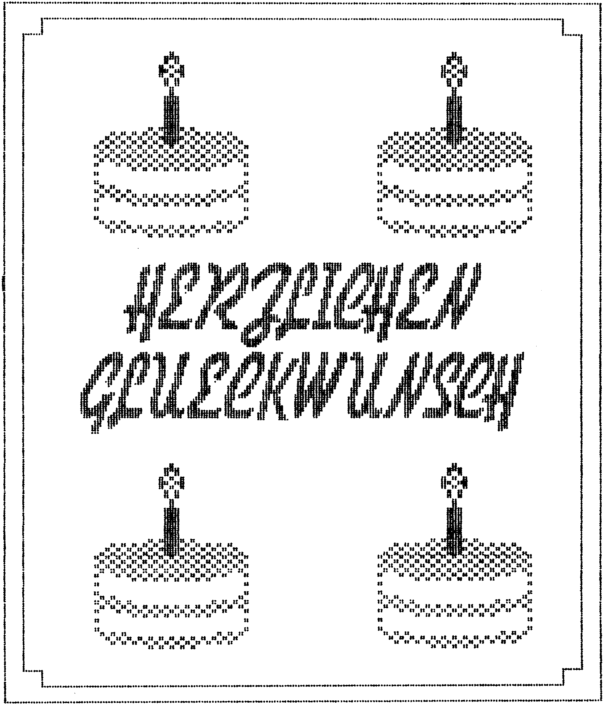
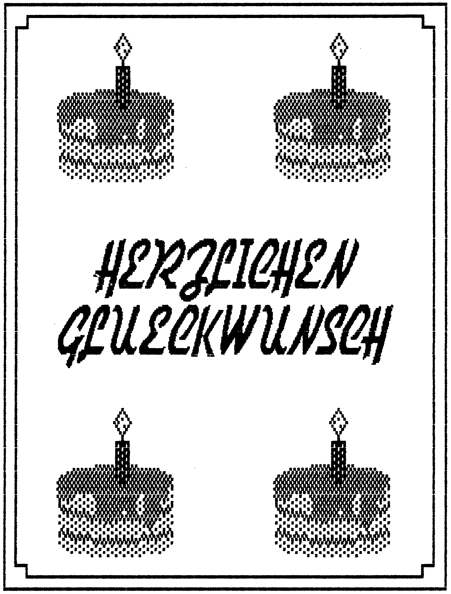
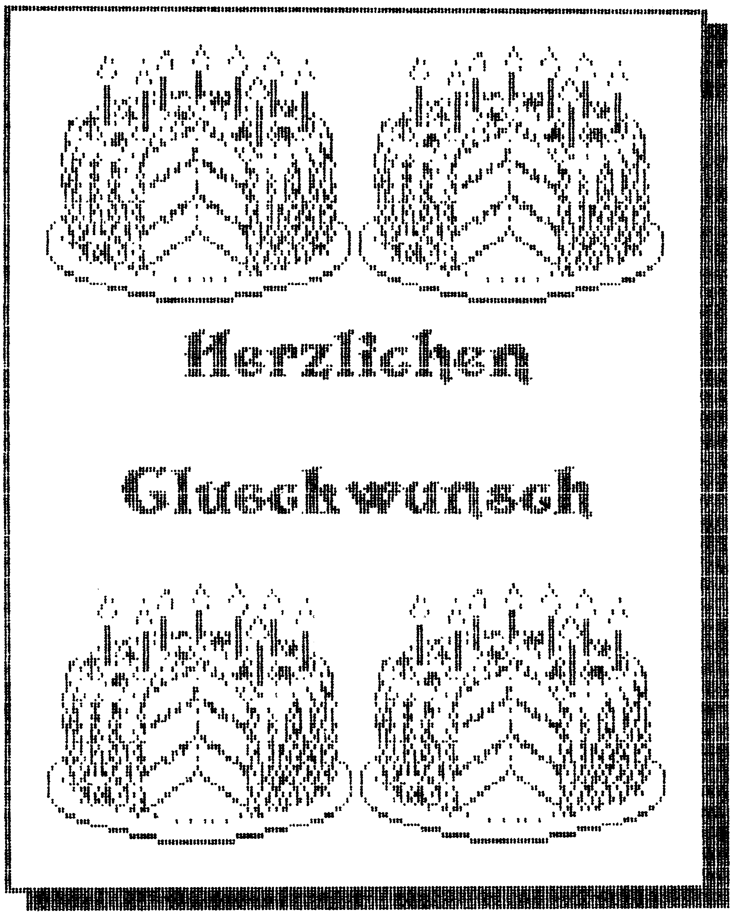
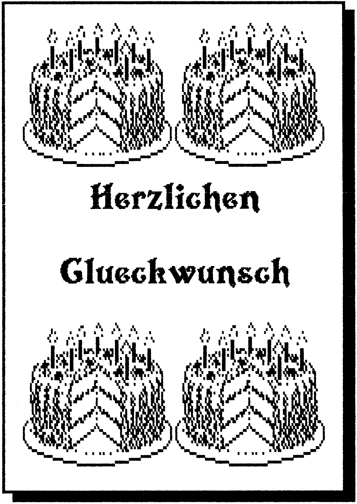
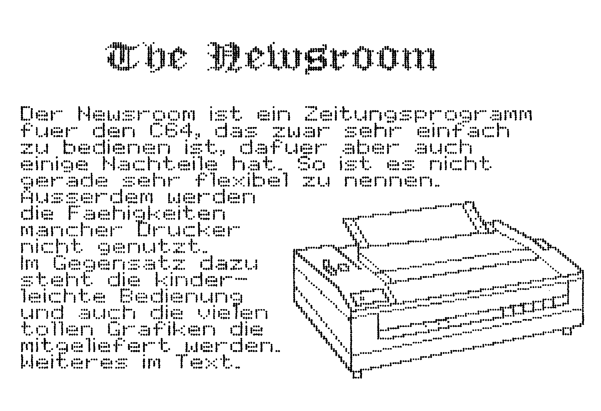
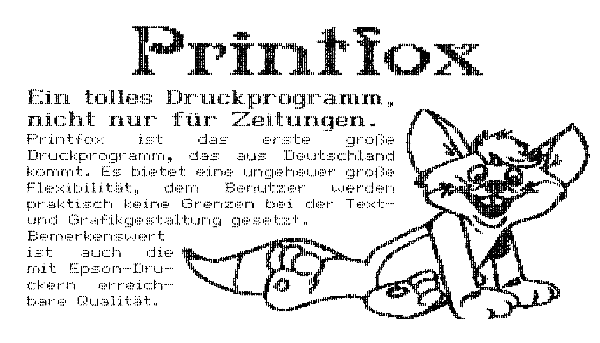
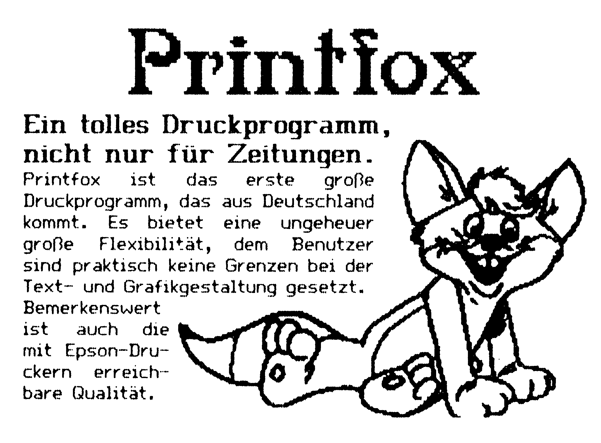

Da läuft der Druckkopf heiß...
Immer nur Listings und Hardcopies drucken wird auf die Dauer langweilig. Wieso sollte man den Drucker nicht kreativ einsetzen? Drucker-Software hilft Ihnen dabei.
Mit einem Glückwunsch-Programm fing alles an. Zwei amerikanische Programmierer wollten elektronische Grüße versenden. Sie stellten sich ein Programm vor, mit dem man Animationen und Texte entwerfen und auf Diskette speichern kann. Diese Diskette sollte dann als Glückwunschkarte beim Empfänger landen. Der Haken an der Sache war: Wie überzeugt man seine 80jährige Großmutter, sich einen Heimcomputer zu kaufen, damit sie an der Glückwunschkarte teilhaben kann? Der rettende Gedanke war dann, sich auf Stilleben zu beschränken, und diese dann auszudrucken: Print Shop war geboren. Inzwischen sind vom Print Shop weltweit über einhunderttausend Stück verkauft worden, eine Zahl, die kaum ein anderes Anwendungsprogramm erreicht hat. Dieser Erfolg löste nun nicht gerade eine Lawine an Druck-Programmen aus, aber immerhin sind bisher einige vielversprechende Produkte erschienen. Sogar eine Fortsetzung des Print Shop gibt es, doch über dieses brandneue Programm erfahren Sie mehr auf den Seiten 39 bis 41. Wir wollen uns in diesem Artikel mit einigen bewährten Druckprogrammen beschäftigen, die schon einige Monate auf dem Markt sind und sich auch in härtestem Redaktionseinsatz bestens bewährt haben.

Der richtige Drucker
Alle angesprochenen Programme arbeiten nur mit grafikfähigen Druckern zusammen. Ein grafikfähiger Drucker ist ein Drucker, der einen Befehl zum Ausdruck einer ganzen Zeile hochauflösender Grafik kennt. Dies bezeichnet man auch als Einzelnadelansteuerung. Nicht grafikfähig hingegen ist ein Drucker mit einem oder mehreren frei definierbaren Zeichen, auch wenn man damit Grafik im scherzhaft benannten »Zitter-Rumpel-Verfahren« drucken kann. Damit fällt der MPS 802 als Drucker für die vorgestellten Programme flach. Die einzige Lösung wäre hier ein Hardware-Eingriff in den Drucker, bei dem das Betriebssystem gewechselt wird. Näheres dazu lesen Sie auf Seite 145. Begrenzt grafikfähig sind die Drucker MPS 801 und MPS 803. Die Grafikauflösung beträgt nämlich nur 480 Punkte pro Zeile, was für gute Grafiken eigentlich zu wenig ist. Fast alle anderen Drucker bringen 640 Punkte pro Zeile zu Papier. Auch Punktzahlen von 960 und sogar 1920 Punkten pro Zeile sind üblich. Mit solchen Druckern lassen sich schon bessere Druckergebnisse erzielen. Leider gibt es hier, gerade bei älteren Modellen, noch Schwierigkeiten, weil jeder Hersteller andere Befehle benutzt, um den Grafikmodus einzuschalten. Inzwischen hat sich der ESC/P-Standard etabliert. Jeder Drucker, der nach diesem Standard arbeitet oder Epson-kompatibel ist, sollte mit den folgenden Programmen fehlerfrei arbeiten. Epson-kompatibel ist die Fachbezeichnung für einen Drucker, der dieselben Befehle wie ein Epson-Drucker versteht. Diese Befehle wurden im ESC/P-Standard zusammengefaßt.

Jedes der Druckprogramme berücksichtigt den MPS 801/803 und die Epson-kompatiblen. Darüber hinaus unterstützt jedes Programm noch eine Reihe von weiteren Druckern, die allerdings von Programm zu Programm unterschiedlich sind. Bitte erkundigen Sie sich vor dem Kauf bei Ihrem Fachhändler, ob Ihr Drucker mit dem Programm einwandfrei arbeitet. Übrigens sollte man den Worten Epson-kompatibel und auch Commodore-MPS-kompatibel immer mit Mißtrauen begegnen. Oft genug berichten uns Leser, daß Ihr vermeintlich kompatibler Drucker nicht mit dem von ihnen gekauften Programm zusammenarbeitet. Falls auch Sie ein etwas exotischeres Drucker-Modell besitzen, behalten Sie sich beim Kauf bitte das Rückgaberecht vor, falls Ihr Drucker und die Software einfach nicht miteinander kooperieren wollen.
Kartendrucker
Beginnen wir mit dem Programm, das den Startschuß für den kreativen Druckereinsatz auslöste: Print Shop. Mit Print Shop kann man Glückwunschkarten, DIN-A4-Schilder, meterlange Banner und Briefpapier drucken. Ein weiterer Menüpunkt nennt sich geheimnisvoll Screen Magic. Er ist noch ein Überbleibsel aus den Anfängen des Print Shop, denn hier bewegen sich farbenprächtige Kaleidoskope über den Bildschirm. Diese kann man aber auch einfrieren, mit Text versehen und als kleineres Schild ausdrucken.

Fast genau dieselben Fähigkeiten hat ein neues Produkt aus Amerika namens Print Master. Die ÄAhnlichkeiten zwischen beiden Programmen sind enorm. Welche Unterschiede es gibt, können Sie aus Tabelle 1 ersehen. Zum Vergleich haben wir von jedem Programm einen Probe-Ausdruck gemacht, die Sie in den Bildern l bis 4 sehen können.
| Kriterien | Print Shop | Print Master |
|---|---|---|
| Menüpunkte: | Grußkarte, Schild, Banner, Screen, Magic, Graphic Editor, Setup | Grußkarte, Schild, Banner, Kalender, Graphic Editor, Setup, Exit |
| Zeichensätze: | 8 verschiedene, einer pro Ausdruck | 8 verschiedene, beliebig viele pro Ausdruck |
| Schriftstile: | Normal, Outline, 3D, doppelte Größe | Normal, Outline, 3D, doppelte Größe |
| Grafikzeichen: | 60 mitgeliefert eines pro Ausdruck |
111 mitgeliefert eines pro Ausdruck |
| Auflösung der Grafikzeichen: | 88 x 52 (Epson) 44 x 45 (MPS) |
88 x 52 |
| Randmuster: | 9 verschiedene | 11 verschiedene |
| Ausdruck auf: | Epson-kompatible, MPS 801, 803 und andere | Epson-kompatible, MPS 801, 803 und andere |
| Video-Preview: | Nein | Ja |
| Deutsche Umlaute: | Nein (in Planung) | in Vorbereitung |
| Kleinbuchstaben: | Nein | Ja |
| Ausdruck in doppelter Dichte: | Ja, bei Epson-k. | Nein |

Wenn Sie mehr über die beiden Programme wissen möchten, dürfen wir Sie auf die ausführlichen Testberichte verweisen, die im 64'er erschienen sind. Print Shop testeten wir in Ausgabe 4/85 auf Seite 34 und den Print Master in Ausgabe 6/86 auf Seite 150.
Neben Grußkarten, Schildern und Bannern ist der Druck der eigenen Zeitung eine weitere Domäne der Drucker-Software. Zwei Programme haben sich auf dieses Gebiet spezialisiert: Newsroom und Printfox. Newsroom ist ein reines Zeitungsprogramm während sich Printfox für alle Gelegenheiten eignet, bei denen man Grafik und Text wirkungsvoll mischen muß. So kann man auch Folien für Referate oder Glückwunschkarten mit Printfox entwerfen.
Die Zeitungsdrucker
Das schönste bei Newsroom ist die vorbildliche Benutzerführung. Bis auf das Eintippen des Textes kann man alles per Joystick und Bildsymbol steuern. Dafür ist die Druckqualität nicht sehr überzeugend. Selbst auf einem Epson-Drucker wird nur mit einer Auflösung von 480 Punkten pro Zeile gedruckt. Deswegen unterscheiden sich der Ausdruck eines Epson und eines MPS 803 überhaupt nicht voneinander, für Besitzer eines teuren Druckers eine herbe Enttäuschung.

Beim Printfox ist es genau umgekehrt: Die Druckqualität ist außerordentlich gut, wenn man mit einem Epson-Drucker arbeitet, dafür muß der Benutzer aber auch etwas mehr tun. Der Text wird nämlich nicht direkt auf die Grafik getippt, sondern mit einer eingebauten Textverarbeitung geschrieben und dann in die Grafikseite kopiert. Entgegen dem Newsroom, der überhaupt keine Formatierungsmöglichkeiten bietet, hat der Printfox derer eine Menge: Text kann in verschiedenen Größen, hoch und tiefgestellt, unterstrichen oder fett gedruckt werden. Einen direkten Vergleich der beiden Programme gibt es in Tabelle 2. Auch hier gibt es von jedem Programm Probe-Ausdrucke in den Bildern 5 bis 7.
| Kriterien | Newsroom | Printfox |
|---|---|---|
| Text-Layout: | zweispaltig mit Head, in 8 Panels aufgeteilt | beliebig |
| Zeichensätze: | 5 mitgeliefert | 5 mitgeliefert, beliebig viele nachladbar (Zeichensatz-Editor nachkaufbar) |
| Verwendbare Drucker: | MPS, Epson und kompatible und viele andere | MPS, Epson und kompatible, an fast jeden Drucker anpaßbar |
| Grafiken: | 600 Bilder mitgeliefert, weitere nachkaufbar (600 und 800) | über 50 teils digitalisierte Bilder mitgeliefert, kann HiRes-Bilder verarbeiten |
| Auflösung einer DIN-A4-Seite: | 480 x 1344 | MPS: 480 x 800 Epson: 640 x 800 Hi-Qu: 1920 x 1600 |
| Texteingabe: | einfacher Minimal-Editor | Vizawrite-ähnlicher Text-Editor |
| Grafikeingabe: | Zeichenprogramm integriert | Zeichenprogramm ähnlich Hi-Eddi integriert |
| Formatierung: | Direktes Plazieren am Bildschirm | Mit Formatierbefehlen im Text |
| Deutsche Umlaute: | In Vorbereitung | Ja |
| Besonderheiten: | Datenfernübertragung integriert | Zusatzprogramme in Arbeit oder schon lieferbar |


Wer noch mehr über den Printfox wissen will, sei auf Ausgabe 6/86 verwiesen, in der wir das Programm auf den Seiten 154 und 155 getestet haben. Einen Newsroom-Test gibt es natürlich auch und zwar in 64'er 2/86 auf den Seiten 136 und 137.
Der Rest der Welt
Natürlich sind dies nicht die einzigen Druck-Programme, aber mit Sicherheit doch die einfallsreichsten und besten. So hätten wir hier zum Beispiel auch Grafikprogramme mit Hardcopy-Funktion testen können, doch diese werden genügend Beachtung finden, wenn es wieder einen Schwerpunkt zum Thema Grafik in der 64er gibt. Dank Kombinationsmöglichkeiten von Text und Grafik wären GeoWrite, und Geopaint (64'er 6/86, Seite 21) sowie Fontmaster II (64'er 5/86, Seite 160) weitere Kandidaten für diese Übersicht gewesen. Diese Programme sind jedoch völlig anders aufgebaut, als die hier vorgestellten.
Eines bleibt gewiß: Die Entwicklung ist sicherlich noch nicht abgeschlossen, weitere Druckprogramme werden mit Sicherheit erscheinen. Trotzdem kann man mit dem, was jetzt auf dem Markt ist, höchst zufrieden sein. Doch passen Sie bei all der guten Software auf, daß Sie Ihren Drucker nicht kaputtdrucken, denn so ein Druckkopf braucht ab und zu mal eine Abkühlung!
(bs)Info: Print Shop: Rushware, An der Gümpgesbrücke 24, 4044 Kaarst 2
Print Master, Newsroom: Ariolasoft, Carl-Bertelsmann-Str. 161, 4830 Gütersloh
Printfox: Scanntronic, Parkstr. 38, 8011 Zorneding.